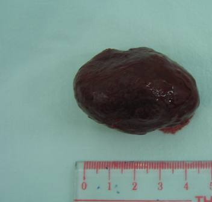

+ U mạch dạng hang.

Hình: Đại thể u mạch hang phẫu thuật từ hốc mắt
+ U mạch hang là một loại u thường gặp trong u hốc mắt, lành tính, và đa số nằm trong chóp cơ vận nhãn. Ngoại trừ một số trường hợp u nhỏ không có triệu chứng không cần phải can thiệp, hầu hết các trường hợp khác đều có thể can thiệp phẫu thuật để giải quyết biến chứng lồi mắt hoặc các biến chứng do u chèn ép gây nên. Trong phẫu thuật lấy u, đường mở thái dương là thích hợp nhất, nó cho phép bộc lộ tốt khối u và cho kết quả tốt sau phẫu thuật. Tuy nhiên, trong một số trường hợp khối u nằm ở vị trí không thuận lợi, phía trong, trên và sâu, chọn đường phẫu thuật qua đường xuyên sọ, mục đích nhằm bảo đảm an toàn tình trạng nhãn cầu của bệnh nhân, cũng như yêu cầu về thẩm mỹ.
Phẫu thuật lấy U mạch thể hang bằng đường thái dương (Đoạn film được thực hiện tại BV TƯ Huế - Báo cáo trong Hội Nghị Nhãn Khoa Toàn Quốc 2006)